Turn this brief into a deck saved next to it as an .odp: one slide per channel section, slide title = the channel name, body = that section's budget line and its KPI line. Media buyers need the channels in the brief's order.
{
"config": [
{
"type": "execute",
"parameters": {
"command": "python3 -c \"import os;os.makedirs('/home/user/marketing',exist_ok=True);open('/home/user/marketing/campaign_brief.txt','w').write('''Q3 Launch Brief - Perrin & Vale\\n\\nPaid Search\\nBudget: 42000 GBP\\nKPI: 3.2% CTR\\n\\nPaid Social\\nBudget: 28500 GBP\\nKPI: 1.8 ROAS\\n\\nEmail\\nBudget: 6200 GBP\\nKPI: 24% open rate\\n\\nOut of Home\\nBudget: 51000 GBP\\nKPI: 4.1M impressions\\n''')\"",
"shell": true
}
},
{
"type": "open",
"parameters": {
"path": "/home/user/marketing/campaign_brief.txt"
}
}
],
"evaluator": {
"func": "check_include_exclude",
"result": {
"type": "vm_command_line",
"command": [
"python3",
"-c",
"import sys, traceback\ndef _main():\n import glob, sys, zipfile\n import xml.etree.ElementTree as ET\n DRAW = \"{urn:oasis:names:tc:opendocument:xmlns:drawing:1.0}\"\n cands = glob.glob(\"/home/user/marketing/*.odp\")\n if not cands:\n print(\"no .odp in /home/user/marketing\", file=sys.stderr)\n print(\"FAIL\")\n raise SystemExit\n want = [(\"paid search\", \"42000\", \"3.2\"), (\"paid social\", \"28500\", \"1.8\"),\n (\"email\", \"6200\", \"24\"), (\"out of home\", \"51000\", \"4.1\")]\n best = None\n for path in cands:\n try:\n root = ET.fromstring(zipfile.ZipFile(path).read(\"content.xml\"))\n except Exception as e:\n print(\"%s unreadable: %s\" % (path, e), file=sys.stderr)\n continue\n slides = []\n for pg in root.iter(DRAW + \"page\"):\n slides.append(\" \".join(\"\".join(f.itertext()) for f in pg.iter(DRAW + \"frame\")).lower())\n probs = []\n if len(slides) != 4:\n probs.append(\"%s has %d slides not 4\" % (path, len(slides)))\n else:\n for i, (name, bud, kpi) in enumerate(want):\n s = slides[i].replace(\",\", \"\")\n if name not in s:\n probs.append(\"slide %d missing %s\" % (i + 1, name))\n if bud not in s:\n probs.append(\"slide %d missing budget %s\" % (i + 1, bud))\n if kpi not in s:\n probs.append(\"slide %d missing kpi %s\" % (i + 1, kpi))\n if not probs:\n best = path\n break\n if best is None:\n print(\"; \".join(probs), file=sys.stderr)\n print(\"PASS\" if best else \"FAIL\")\n\ntry:\n _main()\nexcept Exception:\n traceback.print_exc(file=sys.stderr)\n print(\"FAIL\")\n"
]
},
"expected": {
"type": "rule",
"rules": {
"include": [
"PASS"
],
"exclude": [
"FAIL"
]
}
}
}
}
step 1 02:49:40
THINKINGI need to create an Impress presentation (.odp) with one slide per channel section. Let me first understand the brief structure from the screenshot:
- Line 1: 03 Launch Brief - Perrin & Vale (title/header)
- Lines 3-5: Paid Search / Budget: 42000 GBP / KPI: 3.2% CTR
- Lines 7-9: Paid Social / Budget: 28500 GBP / KPI: 1.8 ROAS
- Lines 11-13: Email / Budget: 6200 GBP / KPI: 24% open rate
- Lines 15-17: Out of Home / Budget: 51000 GBP / KPI: 4.1M impressions
So four channels in order: Paid Search, Paid Social, Email, Out of Home. Each slide title = channel name, body = budget line + KPI line.
The file is at ~/marketing/campaign_brief.txt, so I save as ~/marketing/campaign_brief.odp (or matching name). "saved next to it as an .odp" - I'll use campaign_brief.odp.
I'll open LibreOffice Impress via the taskbar. Let me take a screenshot first to find the icon. There's a LibreOffice Impress icon in the left dock (the orange one at ~22,316).
Let me start Impress.
ACTIONI'll create the presentation in LibreOffice Impress. First, let me launch it.
THINKINGImpress is open with a title+content slide. I'll use the Outline view which is the fastest way to build slides: type title, Enter, Tab for body, etc. Actually, let me use the outline view (View > Outline) which lets me type titles and bullet content quickly.
Plan for outline view:
- Type "Paid Search", Enter, Tab, "Budget: 42000 GBP", Enter, "KPI: 3.2% CTR", Enter, Shift+Tab, "Paid Social", Enter, Tab, etc.
Let me close the notification bars first, then switch to Outline view. Actually I can just use the outline. Let me close the two info bars by clicking their X, then View > Outline.
Let me first close notifications.
ACTIONImpress is open. I'll use the Outline view to build the slides efficiently. First, let me close the notification bars.
EXECUTED (pyautogui in VM)pyautogui.click(1493, 184)
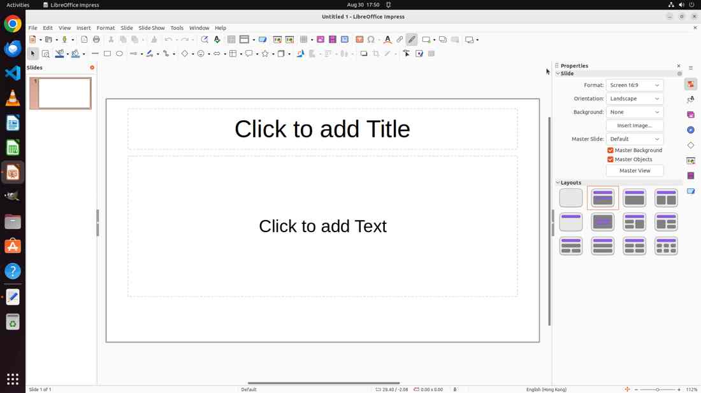
step 5 02:50:19
THINKINGNotifications closed. Now switch to Outline view via View menu. In Outline view I can type titles and Tab/Shift+Tab to indent body text. Let me open View menu.
ACTIONNow I'll switch to Outline view to type the content quickly.
EXECUTED (pyautogui in VM)pyautogui.click(205, 125)
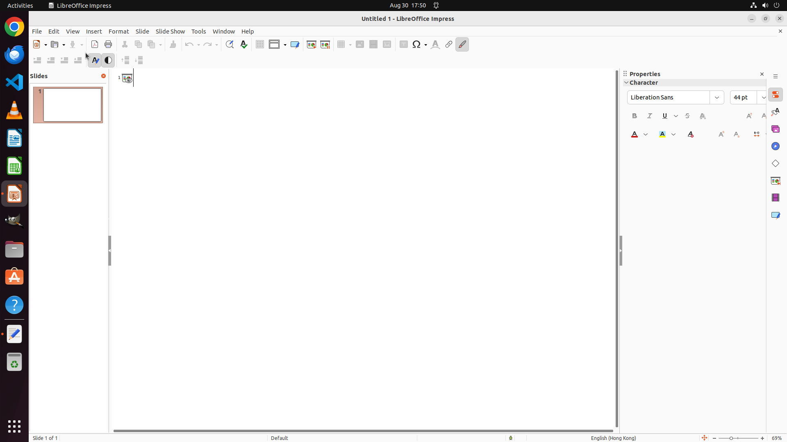
step 7 02:50:37
THINKINGOutline view is active with cursor in the title position of slide 1. I'll type the full outline using type and key presses. The structure:
Title line: "Paid Search"
Enter -> new title line
Tab -> demote to body
Type "Budget: 42000 GBP"
Enter -> new body line (same level)
Type "KPI: 3.2% CTR"
Enter
Shift+Tab -> promote back to title (new slide 2)
Type "Paid Social"
Enter, Tab, "Budget: 28500 GBP", Enter, "KPI: 1.8 ROAS", Enter, Shift+Tab, "Email", Enter, Tab, "Budget: 6200 GBP", Enter, "KPI: 24% open rate", Enter, Shift+Tab, "Out of Home", Enter, Tab, "Budget: 51000 GBP", Enter, "KPI: 4.1M impressions"
I need to be careful about the "type" action including newlines. I'll use separate actions to be safe with Tab keys. Actually I can chain: type text, key Return, key Tab, type, etc. Let me batch them.
Let me do it in one big batched call sequence.
ACTIONThe Outline view is ready with the cursor in the first slide's title. I'll type all four channel slides in sequence, using Tab to demote to body lines and Shift+Tab to start a new slide.
EXECUTED (pyautogui in VM)pyautogui.typewrite("Paid Search")
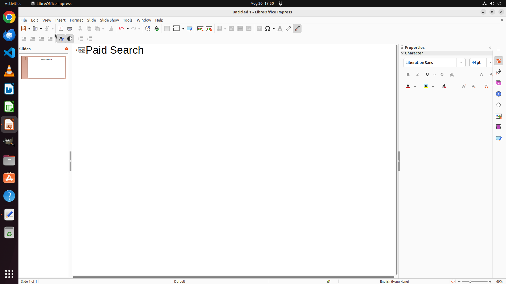
step 8 02:50:49
THINKING"Paid Search" is now the title of slide 1. Now I'll add the body lines and subsequent slides. I'll batch the remaining actions: Enter, Tab, type budget, Enter, type KPI, then for next slides Enter, Shift+Tab, type title, etc.
Sequence:
1. Return (new title line for slide... actually after title, Enter creates new title line; then Tab demotes to body)
2. Tab
3. type "Budget: 42000 GBP"
4. Return
5. type "KPI: 3.2% CTR"
6. Return
7. shift+Tab (promote to title = new slide)
8. type "Paid Social"
9. Return, Tab, type "Budget: 28500 GBP", Return, type "KPI: 1.8 ROAS"
10. Return, shift+Tab, type "Email", Return, Tab, type "Budget: 6200 GBP", Return, type "KPI: 24% open rate"
11. Return, shift+Tab, type "Out of Home", Return, Tab, type "Budget: 51000 GBP", Return, type "KPI: 4.1M impressions"
Let me batch all this.
ACTIONNow I'll add the body lines and the remaining three slides in one batched sequence.
EXECUTED (pyautogui in VM)pyautogui.press("return")
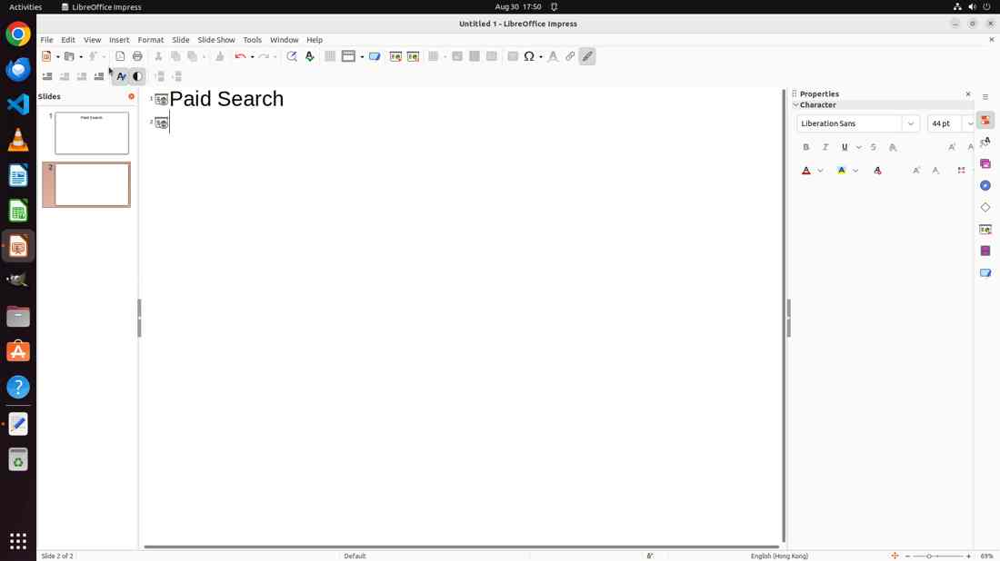
step 9 02:50:57
THINKINGReturn created a new slide 2 title line. Now I press Tab to demote to body of slide 1. The Tab in outline demotes the current line, which will attach it as body under slide 1. Then I type. Let me batch the rest now.
THINKINGThe Tab demoted the line to body level (font 32pt) and it's now under slide 1 (back to "Slide 1 of 1" in status, and the second slide merged back). The cursor is at the body position under "Paid Search". Now I can type the rest in one big batch. The pattern for each subsequent slide: after the last KPI line, Return then Shift+Tab promotes to a new title line.
Let me batch the entire remaining content:
type "Budget: 42000 GBP"
Return
type "KPI: 3.2% CTR"
Return
shift+Tab (promote -> new slide 2 title)
type "Paid Social"
Return
Tab
type "Budget: 28500 GBP"
Return
type "KPI: 1.8 ROAS"
Return
shift+Tab
type "Email"
Return
Tab
type "Budget: 6200 GBP"
Return
type "KPI: 24% open rate"
Return
shift+Tab
type "Out of Home"
Return
Tab
type "Budget: 51000 GBP"
Return
type "KPI: 4.1M impressions"
I'll batch these.
ACTIONNow I'll type the full remaining content for all four channel slides in one batch.
EXECUTED (pyautogui in VM)pyautogui.typewrite("Budget: 42000 GBP")
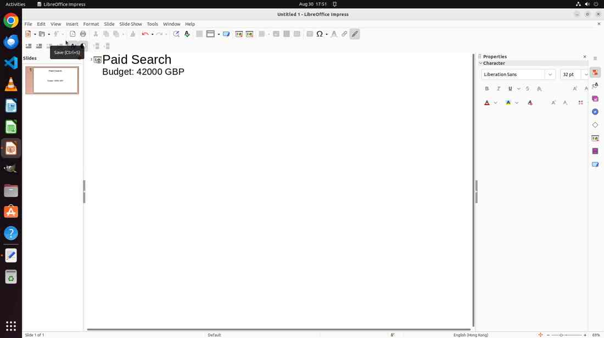
step 11 02:51:25
THINKING"Budget: 42000 GBP" is the body of slide 1. Now I'll continue batching the rest. Let me batch: Return, type KPI, Return, shift+Tab, type Paid Social, Return, Tab, type budget, Return, type KPI, Return, shift+Tab, type Email, Return, Tab, budget, Return, KPI, Return, shift+Tab, type Out of Home, Return, Tab, budget, Return, KPI.
ACTIONThe body line works. Now I'll batch the remaining KPI line and all three subsequent channel slides.
EXECUTED (pyautogui in VM)pyautogui.press("return")
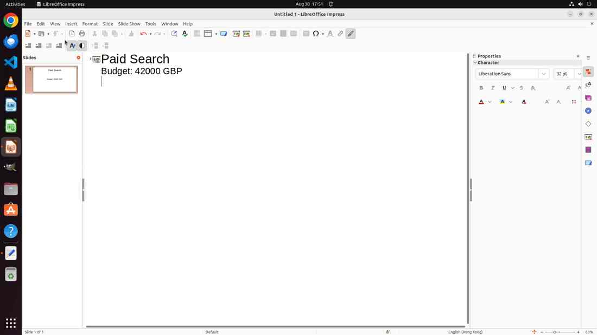
step 12 02:51:35
THINKINGThe Return created a new body line at same level. Now I'll batch the remaining full sequence. The cursor is at a body level line under Paid Search. I'll type KPI, then Return, Shift+Tab to create slide 2, and so on. Let me batch all remaining actions in one call.
ACTIONNow I'll type the rest of the deck in one batched sequence.
EXECUTED (pyautogui in VM)pyautogui.typewrite("KPI: 3.2% CTR")
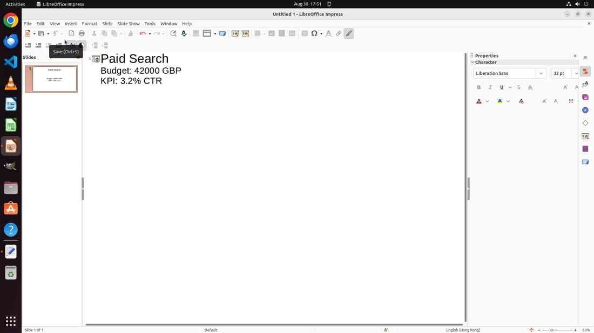
step 13.1 02:52:09
THINKINGSlide 1 complete: Paid Search, Budget, KPI. Now I'll batch the rest: Return, shift+Tab (new slide 2 title), type Paid Social, Return, Tab, budget, Return, KPI, then repeat for Email and Out of Home. I'll do all in one batch.
ACTIONSlide 1 is complete. Now I'll add the remaining three channel slides in one batched sequence.
EXECUTED (pyautogui in VM)pyautogui.press("return")
step 13.2 02:52:12
same model call as the previous action
EXECUTED (pyautogui in VM)pyautogui.hotkey("shift", "tab")
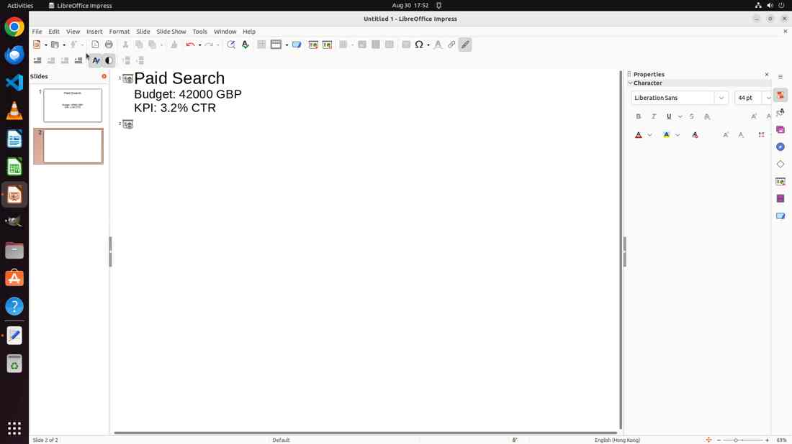
step 13.3 02:52:16
same model call as the previous action
EXECUTED (pyautogui in VM)pyautogui.typewrite("Paid Social")
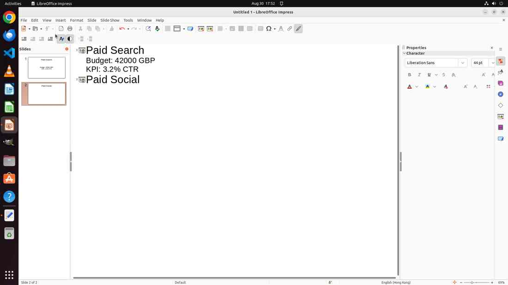
step 13.4 02:52:19
same model call as the previous action
EXECUTED (pyautogui in VM)pyautogui.press("return")
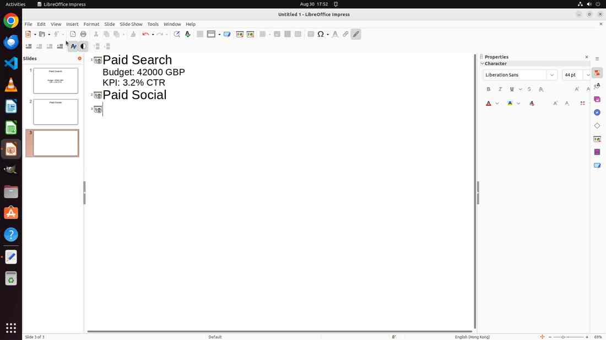
step 13.5 02:52:22
same model call as the previous action
EXECUTED (pyautogui in VM)pyautogui.press("tab")
step 13.6 02:52:26
same model call as the previous action
EXECUTED (pyautogui in VM)pyautogui.typewrite("Budget: 28500 GBP")
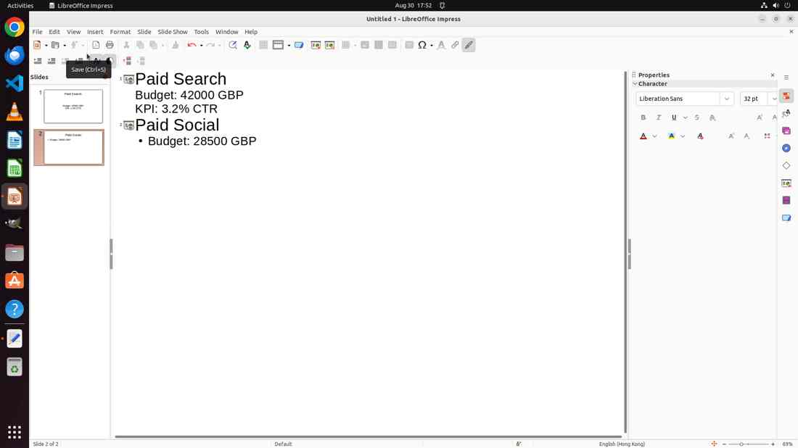
step 13.7 02:52:29
same model call as the previous action
EXECUTED (pyautogui in VM)pyautogui.press("return")
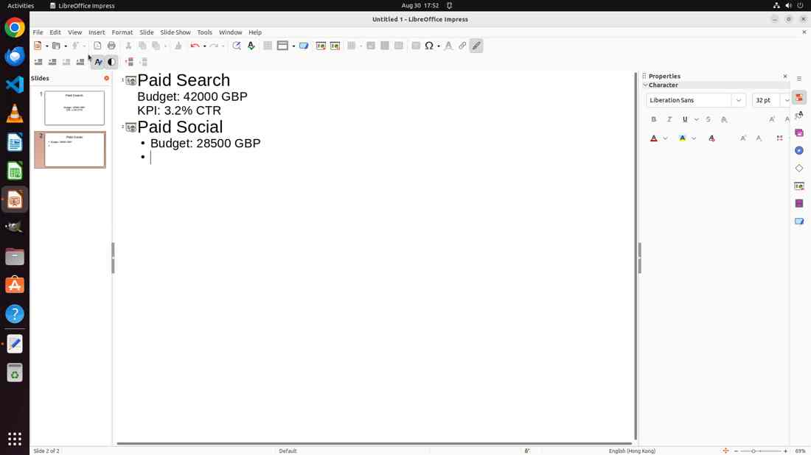
step 13.8 02:52:32
same model call as the previous action
EXECUTED (pyautogui in VM)pyautogui.typewrite("KPI: 1.8 ROAS")
step 13.9 02:52:35
same model call as the previous action
EXECUTED (pyautogui in VM)pyautogui.press("return")
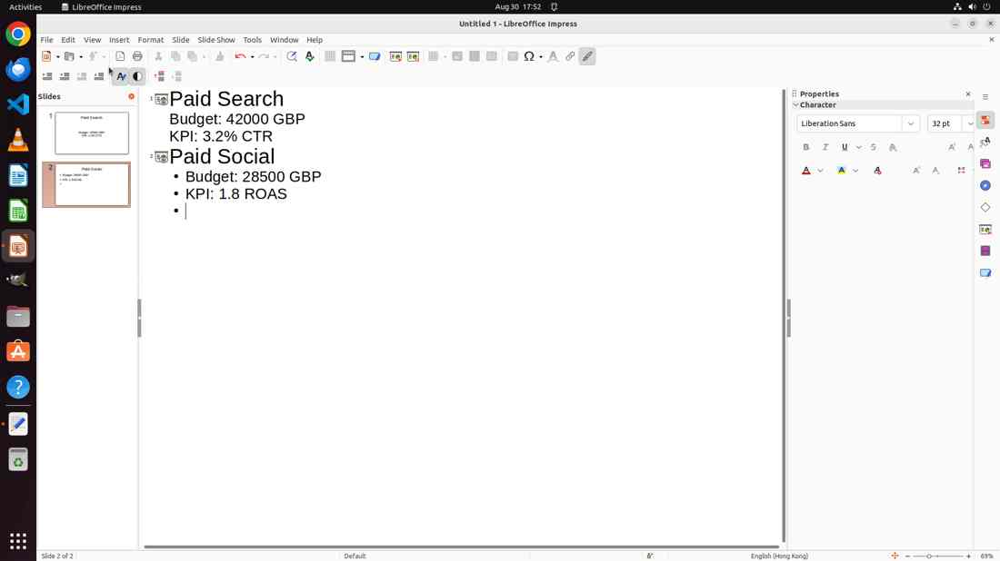
step 13.10 02:52:39
same model call as the previous action
EXECUTED (pyautogui in VM)pyautogui.hotkey("shift", "tab")
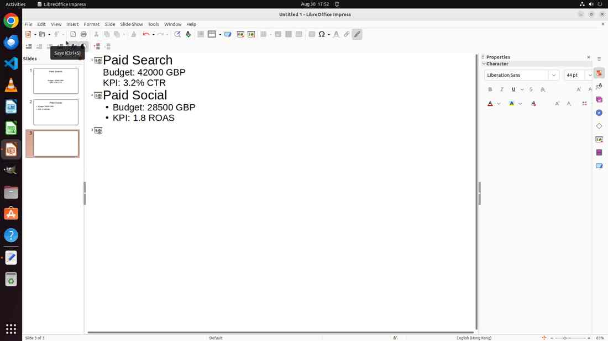
step 13.11 02:52:42
same model call as the previous action
EXECUTED (pyautogui in VM)pyautogui.typewrite("Email")
step 13.12 02:52:45
same model call as the previous action
EXECUTED (pyautogui in VM)pyautogui.press("return")
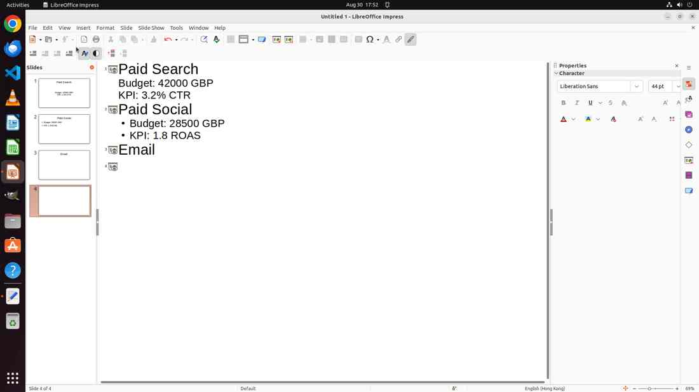
step 13.13 02:52:57
same model call as the previous action
EXECUTED (pyautogui in VM)pyautogui.press("tab")
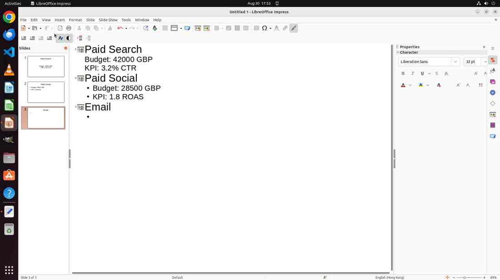
step 13.14 02:53:00
same model call as the previous action
EXECUTED (pyautogui in VM)pyautogui.typewrite("Budget: 6200 GBP")
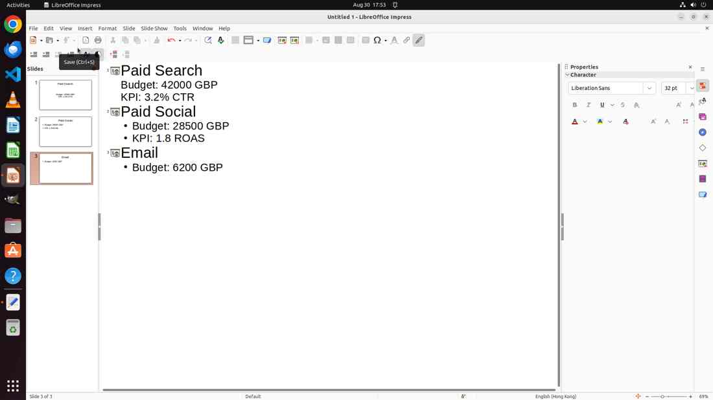
step 13.15 02:53:04
same model call as the previous action
EXECUTED (pyautogui in VM)pyautogui.press("return")
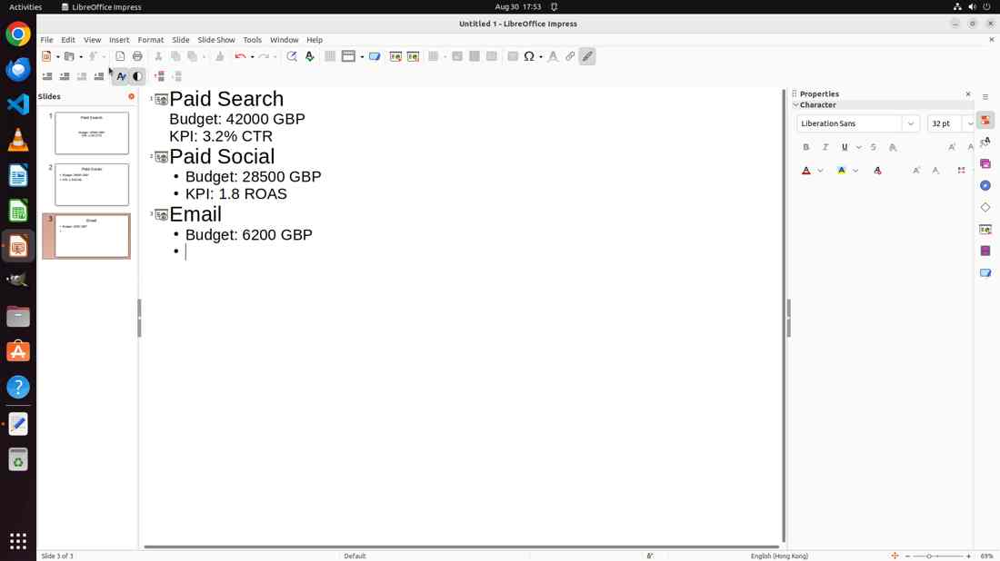
step 13.16 02:53:07
same model call as the previous action
EXECUTED (pyautogui in VM)pyautogui.typewrite("KPI: 24% open rate")
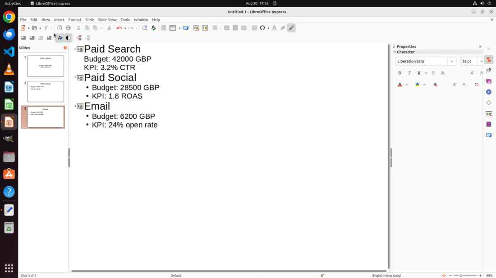
step 13.17 02:53:10
same model call as the previous action
EXECUTED (pyautogui in VM)pyautogui.press("return")
step 13.18 02:53:16
same model call as the previous action
EXECUTED (pyautogui in VM)pyautogui.hotkey("shift", "tab")
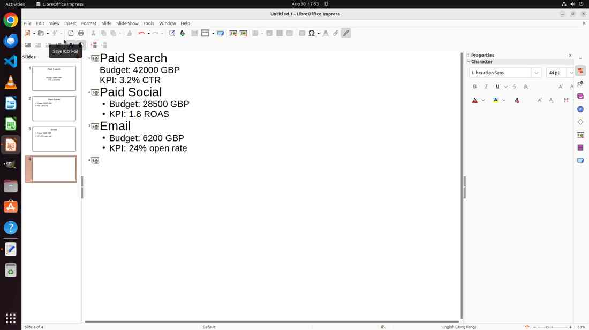
step 13.19 02:53:19
same model call as the previous action
EXECUTED (pyautogui in VM)pyautogui.typewrite("Out of Home")
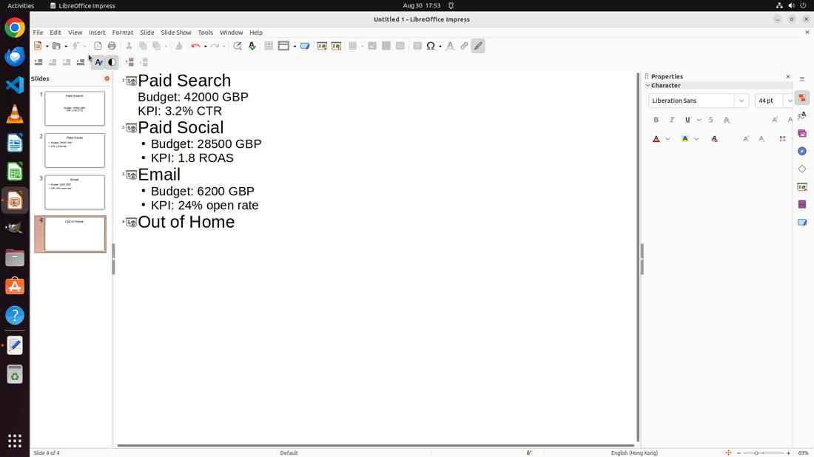
step 13.20 02:53:23
same model call as the previous action
EXECUTED (pyautogui in VM)pyautogui.press("return")
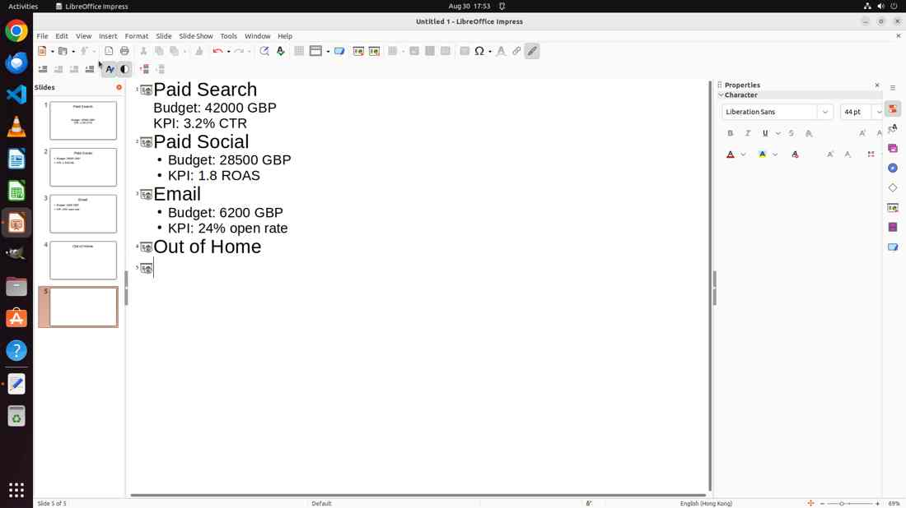
step 13.21 02:53:26
same model call as the previous action
EXECUTED (pyautogui in VM)pyautogui.press("tab")
step 13.22 02:53:29
same model call as the previous action
EXECUTED (pyautogui in VM)pyautogui.typewrite("Budget: 51000 GBP")
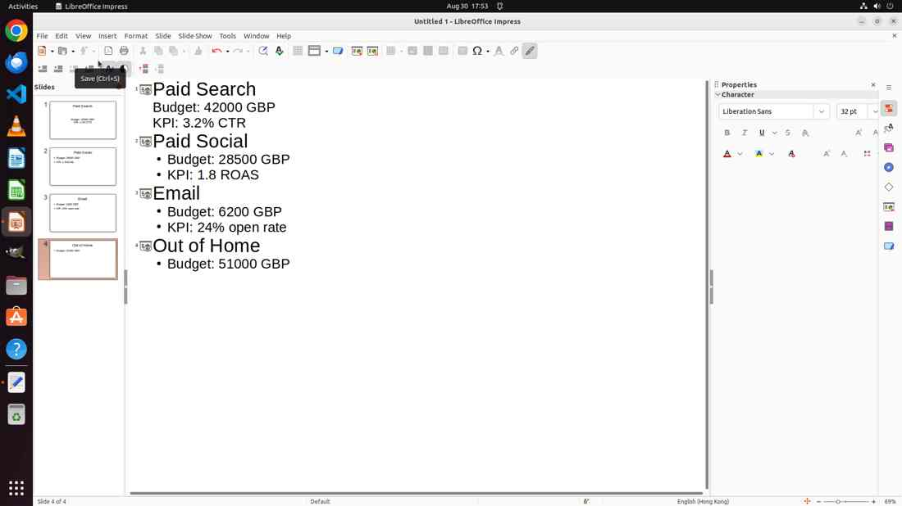
step 13.23 02:53:33
same model call as the previous action
EXECUTED (pyautogui in VM)pyautogui.press("return")
step 13.24 02:53:36
same model call as the previous action
EXECUTED (pyautogui in VM)pyautogui.typewrite("KPI: 4.1M impressions")
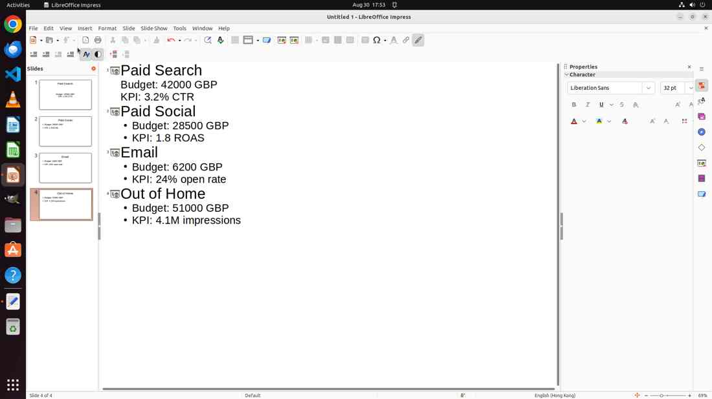
step 14 02:53:47
THINKINGAll four slides are created correctly in the brief's order:
1. Paid Search — Budget: 42000 GBP, KPI: 3.2% CTR
2. Paid Social — Budget: 28500 GBP, KPI: 1.8 ROAS
3. Email — Budget: 6200 GBP, KPI: 24% open rate
4. Out of Home — Budget: 51000 GBP, KPI: 4.1M impressions
Now I need to save as .odp next to the brief, i.e., in ~/marketing/campaign_brief.odp. I'll use File > Save As (Ctrl+Shift+S), navigate to /home/user/marketing, set filename to campaign_brief, and keep ODF format (.odp). Let me open Save As dialog.
ACTIONAll four slides are created in the brief's order with correct titles and body lines. Now I'll save as an .odp file next to the brief using Save As.
EXECUTED (pyautogui in VM)pyautogui.hotkey("ctrl", "shift", "s")
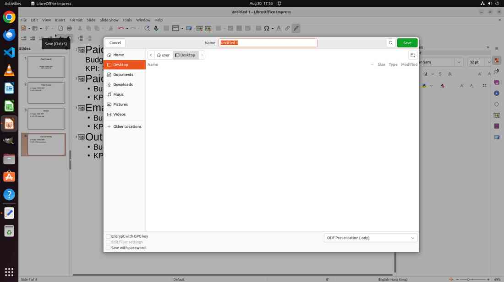
step 15.1 02:54:00
THINKINGSave As dialog is open. Format is already ODF Presentation (.odp) - good. I need to navigate to /home/user/marketing and set the name to campaign_brief. The current location is Desktop under user. I'll type the full path in the Name field using Ctrl+L or just type the path. Actually the Name field accepts a path in GTK dialog. A reliable way: use the location bar. Let me click "Home" then navigate to marketing. But marketing folder may not be in the sidebar.
Simplest: In the Name field, I can type the full path "/home/user/marketing/campaign_brief". GTK save dialogs accept typing a path in the name entry and it navigates. Actually the cleaner method is to press Ctrl+L to open a location entry, type the path. But the Name field itself - if I type a path with /, GTK treats it as path. Let me clear the Name field and type the full path with filename.
Let me triple-click the name field to select "Untitled 1", then type the full path.
ACTIONThe format is already ODF Presentation (.odp). I'll type the full path and filename in the Name field to save it next to the brief.
EXECUTED (pyautogui in VM)pyautogui.tripleClick(1018, 162)
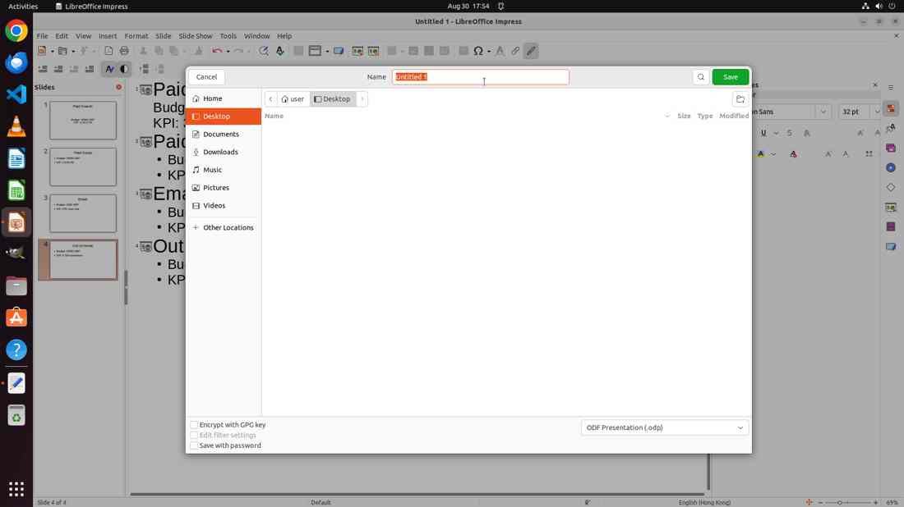
step 15.2 02:54:04
same model call as the previous action
EXECUTED (pyautogui in VM)pyautogui.typewrite("/home/user/marketing/campaign_brief")
step 15.3 02:54:07
same model call as the previous action
EXECUTED (pyautogui in VM)pyautogui.click(1549, 162)
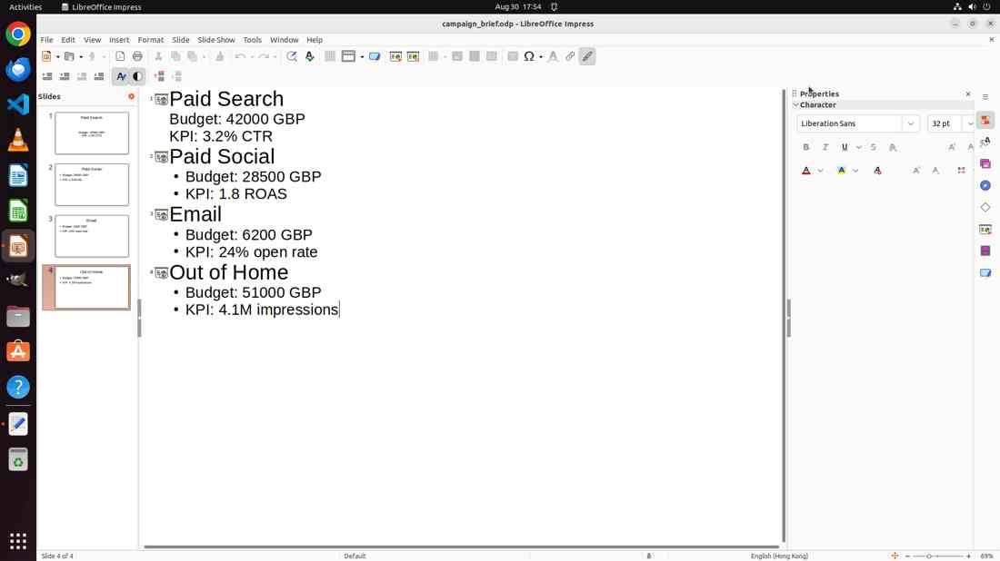
step 16 02:54:21
THINKINGThe file saved successfully — the title bar now reads "campaign_brief.odp - LibreOffice Impress" with no "Keep format" dialog appearing (since it's already ODF). The task is complete. Let me verify the content matches:
- Slide 1: Paid Search / Budget: 42000 GBP / KPI: 3.2% CTR ✓
- Slide 2: Paid Social / Budget: 28500 GBP / KPI: 1.8 ROAS ✓
- Slide 3: Email / Budget: 6200 GBP / KPI: 24% open rate ✓
- Slide 4: Out of Home / Budget: 51000 GBP / KPI: 4.1M impressions ✓
Order matches the brief. File saved as campaign_brief.odp in ~/marketing/, next to the brief. Task complete.
ACTIONThe presentation has been created and saved successfully. The title bar now reads **campaign_brief.odp**, confirming it was saved in ODF format at `/home/user/marketing/` — right next to the original brief.
The deck contains one slide per channel section, in the brief's order:
1. **Paid Search** — Budget: 42000 GBP · KPI: 3.2% CTR
2. **Paid Social** — Budget: 28500 GBP · KPI: 1.8 ROAS
3. **Email** — Budget: 6200 GBP · KPI: 24% open rate
4. **Out of Home** — Budget: 51000 GBP · KPI: 4.1M impressions
Each slide's title is the channel name and the body holds that section's budget line and KPI line, exactly as the brief specified.